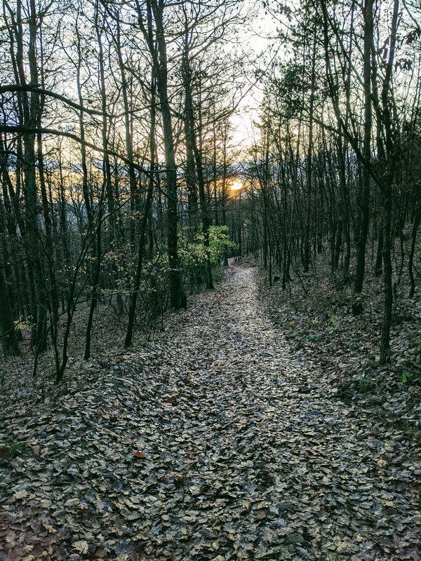

Sedím tu, hlava plná myšlenek a přitom ten tupý pocit prázdnoty pár chvil poté, co se dozvíte zprávu, kterou jste si nepřáli vyslechnout. Všechno, co v tomhle předvánočním shonu “strašně spěchalo” tu najednou leží v bezčasí - mezi rozházenýma hračkama a neumytým nádobím v kuchyni. A asi to tu ještě chvíli ležet bude.
Před očima se mi honí okamžiky, kterýma ses vryla do mýho života. Nováček v práci, který se při zapínání počítače zamotá do všech těch kabelů a vy se mi s Ondrou nepokrytě smějete :-D. Moje první zahraniční služební cesta a to, jak jsme si spolu zašly po příletu na paellu a víno. A vůbec celý Alicante, pár zážitkama nabitejch dnů, kdy jsem z představy, že budeš v nový práci asi jediná, s kterou si nebudu moc rozumět, přišla na to, že dost možná budeš člověk, s kterým si tu budu rozumět ze všech nejlíp. To, jak umíš každýho (včetně mě) suverénně usadit, ale přesto si okamžitě vybavím nemálo okamžiků, kdy jsi mě přede všemi za něco ocenila. Vždycky si budu pamatovat, jak jsi řekla, že jsi ráda, že mě v týmu máte. Naše noční “útěky” z nenáviděných teambuildingů 8-) Grilovačka u vás na zahradě, movie night u Ondry, předvánoční pouštění koled, všechny ty vtípky, který jsme si my tři na sebe v kanclu vymýšleli…
A pak samozřejmě i ty poslední nelehký měsíce, než jsi odešla na mateřskou, nedorozumění mezi náma, pocit křivdy z toho všeho, který jsem si v sobě tak dlouho nosila… Až tvoje diagnóza to všechno definitivně smazala.
Naposledy jsem tě viděla v lednu. To jsme ještě nikdo vůbec netušili, že je před náma tak divnej a neobvyklej rok. Povídaly jsme si o dětech, o mateřské, o těch běžných věcech, o kterých si spolu povídají dvě mámy, když se potkají. A asi by mě vůbec ani nenapadlo, že by to mohlo být naposled, co se spolu vidíme.
Chtěla bych umět pochopit význam toho všeho, pocitu nespravedlnosti a bezradnosti, lítosti nad tím vším, nad tím, že už se ty starý časy nikdy nevrátí, jakkoli banálně to zní. Chtěla bych věřit, že to všechno nějakej význam má. A taky bych chtěla říct, že jsem vděčná za to, že jsme na sebe v životě narazily…
